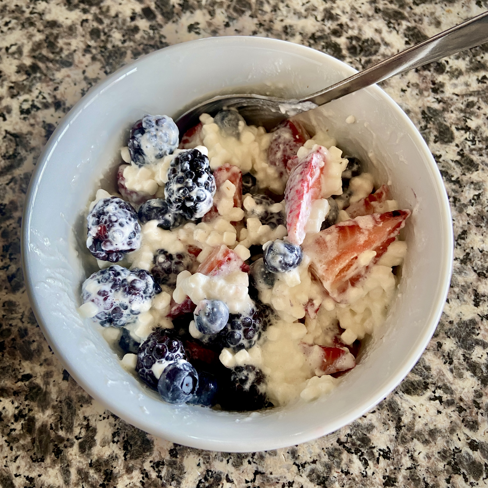

Berry Parfait

Description
Looking for something light AND tasty for breakfast? This is one of my favorite breakfast recipes
due to the fluffy cottage cheese (which is jam packed with protein!) and the sweetness of all the fruit! It's almost like
a bowl of nature's candy without all the sugar! The best part is that it keeps me pretty filled up despite it being so light.
Highly recommend! Let's jump right in!
Macros
- Calories 211
- Carbs 24.1g
- Fat 4.2g
- Protein 21.5g
Ingredients
- 3/4 cup Daisy Low-Fat Cottage Cheese
- 70g of blueberries
- 77g Blackberries
- 121g of sliced strawberries
Steps
- Scoop 3/4 cup of Daisy's Low-Fat Cottage Cheese into a bowl.
- Slice a few strawberries and top the cottage cheese with all your berries.
- Enjoy your yummy breakfast!
Back to Top
Home